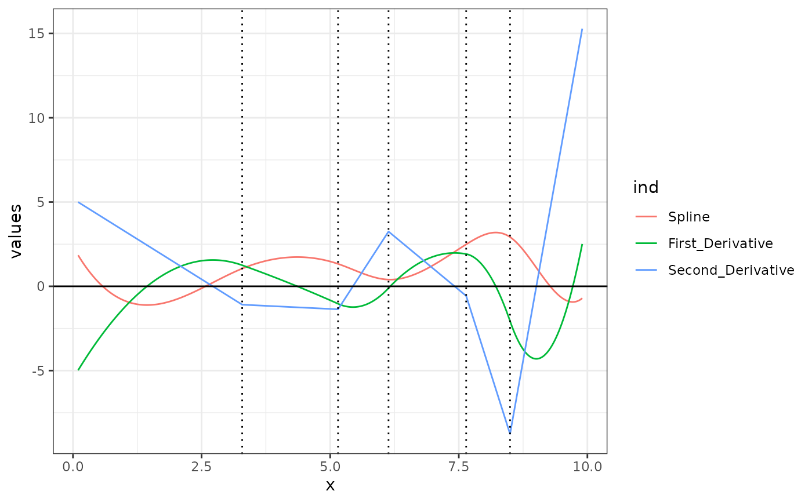
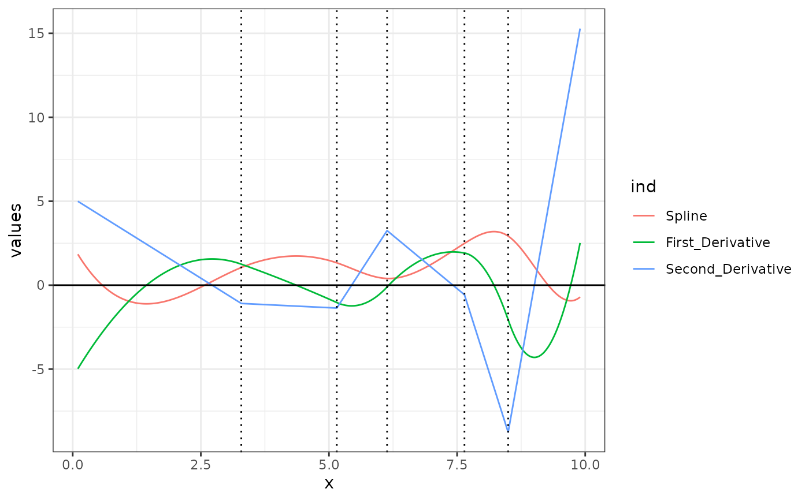

Generate the first and second derivatives of a B-spline Basis.
Usage
bsplineD(
x,
iknots = NULL,
df = NULL,
bknots = range(x),
order = 4L,
derivative = 1L
)References
C. de Boor, "A practical guide to splines. Revised Edition," Springer, 2001.
H. Prautzsch, W. Boehm, M. Paluszny, "Bezier and B-spline Techniques," Springer, 2002.
See also
bsplines for bspline basis. get_spline
will give you the spline or the derivative thereof for a control polygon.
Examples
################################################################################
# Example 1 - pefectly fitting a cubic function
f <- function(x) {
x^3 - 2 * x^2 - 5 * x + 6
}
fprime <- function(x) { # first derivatives of f(x)
3 * x^2 - 4 * x - 5
}
fdoubleprime <- function(x) { # second derivatives of f(x)
6 * x - 4
}
# Build a spline to fit
bknots = c(-3, 5)
x <- seq(-3, 4.999, length.out = 200)
bmat <- bsplines(x, bknots = bknots)
theta <- matrix(coef(lm(f(x) ~ bmat + 0)), ncol = 1)
bmatD1 <- bsplineD(x, bknots = bknots, derivative = 1L)
bmatD2 <- bsplineD(x, bknots = bknots, derivative = 2L)
# Verify that we have perfectly fitted splines to the function and its
# derivatives.
# check that the function f(x) is recovered
all.equal(f(x), as.numeric(bmat %*% theta))
#> [1] TRUE
all.equal(fprime(x), as.numeric(bmatD1 %*% theta))
#> [1] TRUE
all.equal(fdoubleprime(x), as.numeric(bmatD2 %*% theta))
#> [1] TRUE
# Plot the results
old_par <- par()
par(mfrow = c(1, 3))
plot(x, f(x), type = "l", main = bquote(f(x)), ylab = "", xlab = "")
points(x, bmat %*% theta, col = 'blue')
grid()
plot(
x
, fprime(x)
, type = "l"
, main = bquote(frac(d,dx)~f(x))
, ylab = ""
, xlab = ""
)
points(x, bmatD1 %*% theta, col = 'blue')
grid()
plot(
x
, fdoubleprime(x)
, type = "l"
, main = bquote(frac(d^2,dx^2)~f(x))
, ylab = ""
, xlab = ""
)
points(x, bmatD2 %*% theta, col = 'blue')
grid()
 par(old_par)
#> Warning: graphical parameter "cin" cannot be set
#> Warning: graphical parameter "cra" cannot be set
#> Warning: graphical parameter "csi" cannot be set
#> Warning: graphical parameter "cxy" cannot be set
#> Warning: graphical parameter "din" cannot be set
#> Warning: graphical parameter "page" cannot be set
################################################################################
# Example 2
set.seed(42)
xvec <- seq(0.1, 9.9, length = 1000)
iknots <- sort(runif(rpois(1, 3), 1, 9))
bknots <- c(0, 10)
# basis matrix and the first and second derivatives thereof, for cubic
# (order = 4) b-splines
bmat <- bsplines(xvec, iknots, bknots = bknots)
bmat1 <- bsplineD(xvec, iknots, bknots = bknots, derivative = 1)
bmat2 <- bsplineD(xvec, iknots, bknots = bknots, derivative = 2)
# control polygon ordinates
theta <- runif(length(iknots) + 4L, -5, 5)
# plot data
plot_data <-
data.frame(
Spline = as.numeric(bmat %*% theta)
, First_Derivative = as.numeric(bmat1 %*% theta)
, Second_Derivative = as.numeric(bmat2 %*% theta)
)
plot_data <- stack(plot_data)
plot_data <- cbind(plot_data, data.frame(x = xvec))
ggplot2::ggplot(plot_data) +
ggplot2::theme_bw() +
ggplot2::aes(x = x, y = values, color = ind) +
ggplot2::geom_line() +
ggplot2::geom_hline(yintercept = 0) +
ggplot2::geom_vline(xintercept = iknots, linetype = 3)

par(old_par)
#> Warning: graphical parameter "cin" cannot be set
#> Warning: graphical parameter "cra" cannot be set
#> Warning: graphical parameter "csi" cannot be set
#> Warning: graphical parameter "cxy" cannot be set
#> Warning: graphical parameter "din" cannot be set
#> Warning: graphical parameter "page" cannot be set
################################################################################
# Example 2
set.seed(42)
xvec <- seq(0.1, 9.9, length = 1000)
iknots <- sort(runif(rpois(1, 3), 1, 9))
bknots <- c(0, 10)
# basis matrix and the first and second derivatives thereof, for cubic
# (order = 4) b-splines
bmat <- bsplines(xvec, iknots, bknots = bknots)
bmat1 <- bsplineD(xvec, iknots, bknots = bknots, derivative = 1)
bmat2 <- bsplineD(xvec, iknots, bknots = bknots, derivative = 2)
# control polygon ordinates
theta <- runif(length(iknots) + 4L, -5, 5)
# plot data
plot_data <-
data.frame(
Spline = as.numeric(bmat %*% theta)
, First_Derivative = as.numeric(bmat1 %*% theta)
, Second_Derivative = as.numeric(bmat2 %*% theta)
)
plot_data <- stack(plot_data)
plot_data <- cbind(plot_data, data.frame(x = xvec))
ggplot2::ggplot(plot_data) +
ggplot2::theme_bw() +
ggplot2::aes(x = x, y = values, color = ind) +
ggplot2::geom_line() +
ggplot2::geom_hline(yintercept = 0) +
ggplot2::geom_vline(xintercept = iknots, linetype = 3)
